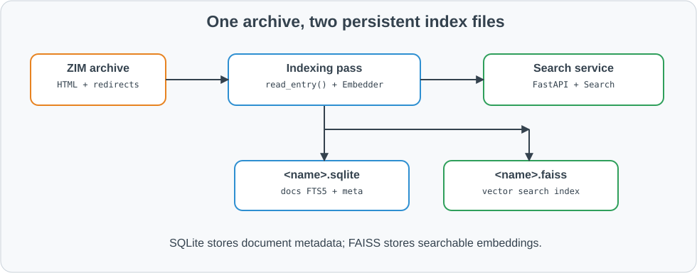
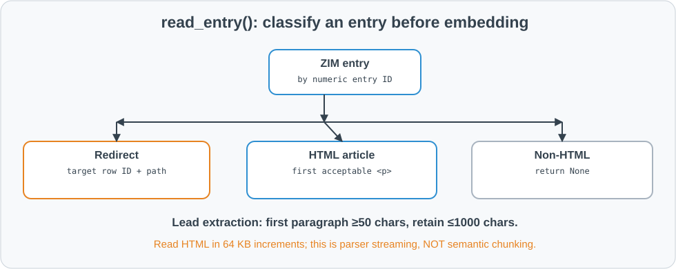
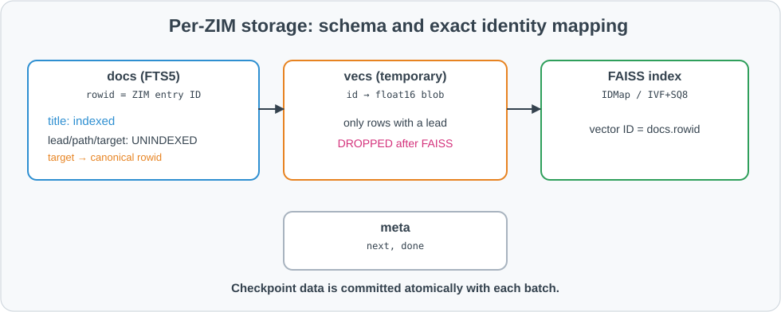
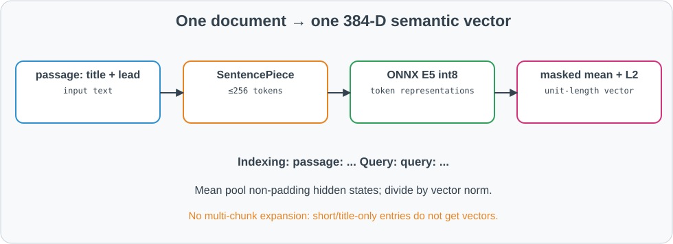
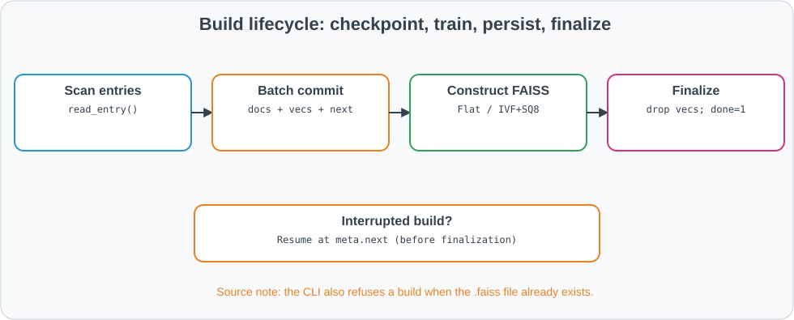
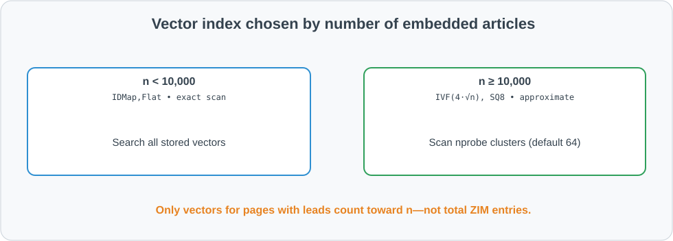
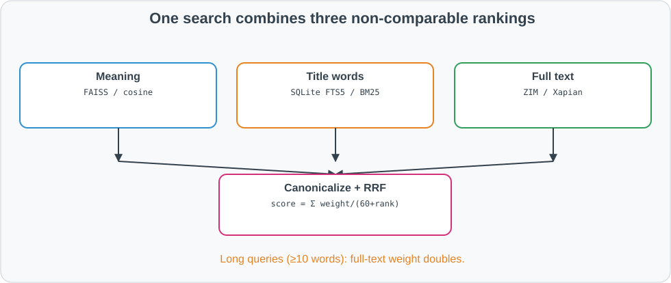
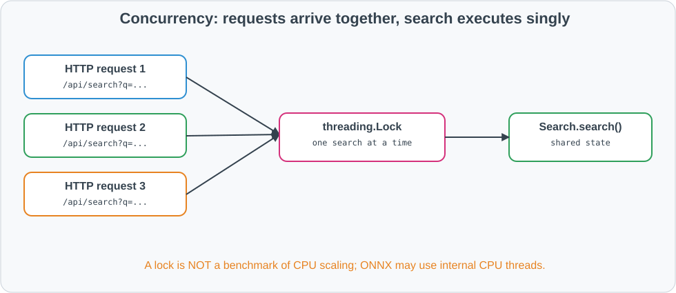
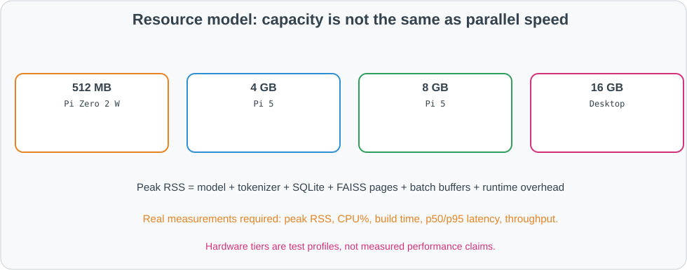
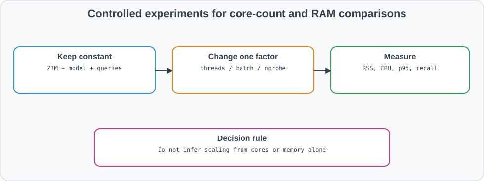

Inside Zimantic
Build → extract → embed → store → search → benchmark. Every major mechanism is tied to the repository, and hypothetical experiments are labeled.
1. Orientation: what Zimantic does
Zimantic is an offline semantic search layer for Kiwix ZIM archives. It is not a replacement article viewer. A build command reads each archive and creates metadata and vector indexes; a serving command opens completed indexes and exposes HTTP search results that link to Kiwix. The current implementation does not generate answers with an LLM.

Learning outcomes: follow a ZIM entry to disk, inspect the schema, explain a vector's journey, calculate an RRF score, and design a reproducible resource benchmark.
Starting point: comfortable with Python basics and SQL tables. If you are new to vectors, think of an embedding as a fixed-length numerical fingerprint for meaning.
Sources: __main__.py, build.py, search.py, README.
2. ZIM decomposition and metadata
The archive reader visits entries by numeric ID. In read_entry(), real redirects become title-only rows pointing at target entry IDs. Non-HTML entries are skipped. HTML entries are examined for a small meta-refresh redirect; otherwise a custom HTML parser extracts the first acceptable paragraph.

The paragraph extractor streams the HTML bytes into HTMLParser in 65,536-byte increments. It accepts the first closing paragraph with at least 50 characters, collapses whitespace, skips certain markup, and returns at most 1,000 characters. Crucially, this is parsing in byte blocks, not RAG document chunking. It does not create multiple semantic chunks for a long article.
MIN_LEAD = 50
MAX_LEAD = 1000
CHUNK = 65536
# First qualifying <p> is retained, at most 1000 characters.A subtle distinction: a too-short first paragraph is not automatically stored title-only. The parser continues to later paragraphs and selects the first one meeting the length threshold. A page with no qualifying paragraph is title-only.
Several fields often called “metadata” are stored: title, lead, path, and target. Zimantic does not currently construct a rich infobox/section/category decomposition. Its extraction is intentionally compact.
Source: zim.py.
3. SQLite schema, temporary vectors, and FAISS IDs
Each ZIM gets its own <name>.sqlite and <name>.faiss. The schema contains docs (an SQLite FTS5 virtual table), meta (checkpoints), and transient vecs (float16 blobs only during build). The title column is indexed by FTS5; lead, path, and target are explicitly marked UNINDEXED.

CREATE VIRTUAL TABLE IF NOT EXISTS docs USING fts5(
title, lead UNINDEXED, path UNINDEXED, target UNINDEXED,
tokenize='unicode61 remove_diacritics 2');
CREATE TABLE IF NOT EXISTS vecs(id INTEGER PRIMARY KEY, v BLOB);
CREATE TABLE IF NOT EXISTS meta(key TEXT PRIMARY KEY, value);Identity invariant: docs.rowid is set to the ZIM entry ID. A vector's FAISS ID uses the same ID. During lookup, FAISS returns IDs which can be used directly to retrieve the SQLite rows. Redirects carry their target ID to resolve canonical articles; redirects are title-searchable but have no semantic vector.
To inspect a completed index, run this our read-only diagnostic SQL (SQLite tooling needed):
SELECT count(*) AS document_rows FROM docs;
SELECT key, value FROM meta;
SELECT rowid, title, path, target FROM docs LIMIT 8;Expected: docs returns article and redirect entries; meta.done indicates completed indexing; a finalized index has no vecs table. Source: build.py, search.py.
4. Embedding: tokens, pooling, and vector persistence
Only pages with non-empty extracted leads enter the embedding batch. The document input starts with passage: and contains title plus first paragraph. Queries use query:. SentencePiece tokenization truncates to 254 body tokens so that the special start and end tokens fit within the 256-token cap.

The int8 ONNX model produces per-token hidden representations. A mask excludes padding, masked mean pooling forms one vector, and L2 normalization produces a unit vector. Because vectors are normalized, inner products match cosine similarity under the standard unit-length assumption.
vectors = (hidden * weights).sum(1) / weights.sum(1)
return vectors / np.linalg.norm(vectors, axis=1, keepdims=True)Intermediate vectors are cast to float16 and stored in the temporary vecs table, then loaded as float32 for FAISS construction. The final SQLite file retains titles/leads/metadata, but not vecs.
5. Build transactions, checkpoints, and resume
The builder accumulates articles until the count of rows with a lead reaches batch_size. Redirect and title-only rows may be present in the same batch, so batch length and embedded-article count differ. _save() inserts the document rows, embeds qualifying pages, stores vector bytes, and writes meta.next in one SQLite transaction.

If an interrupted build is restarted before finalization, it reads meta.next and continues at that ZIM entry. After scanning entries, it builds FAISS, deletes vecs, sets meta.done, and vacuums SQLite.
Recovery edge case: __main__.py refuses to start a build if the output .faiss file already exists, even if SQLite's done flag is absent. That means a crash after FAISS output but before finalization may require manual recovery. Don't promise automatic resume across every crash point.
with db:
db.executemany("INSERT INTO docs(rowid, title, lead, path, target) VALUES (?, ?, ?, ?, ?)", rows)
# embed eligible rows and write vecs
db.execute("INSERT OR REPLACE INTO meta VALUES ('next', ?)", (next_entry,))Sources: build.py, __main__.py.
6. Flat versus IVF+SQ8 index policy
At fewer than 10,000 embedded articles, the builder uses IDMap,Flat, which evaluates every stored vector and is exact for the indexed vectors. At 10,000 or above, it selects an IVF index with int(4 × √n) clusters and scalar 8-bit quantization (SQ8). It trains the IVF index on a sampled subset, then adds vectors in batches of up to 50,000.

For an illustrative n = 70,000 embedded articles, the formula gives int(4 √70,000) = 1058 clusters, but that does not mean a real WikiMed index has exactly 70,000 embedded articles. In serving, nprobe defaults to 64 for IVF indexes, while the flat index has no probe setting.
if n < 10_000:
index = faiss.index_factory(dim, "IDMap,Flat", faiss.METRIC_INNER_PRODUCT)
else:
cluster_centre_count = int(4 * n ** 0.5)
index = faiss.index_factory(dim, f"IVF{cluster_centre_count},SQ8", faiss.METRIC_INNER_PRODUCT)Memory mapping is enabled when loading FAISS in search.py; it can reduce mandatory initial loading but does not imply zero RAM usage. The OS page cache and accessed clusters still consume memory. Sources: build.py, search.py.
7. Query path, redirects, and reciprocal rank fusion
A search starts by embedding query: .... For every selected ZIM, it retrieves semantic candidates from FAISS, title-word candidates from FTS5/BM25, and full-text candidates from libzim's searcher if the archive provides one. It fetches up to 2 × limit candidates per list, anticipating redirect and duplicate collapse.

These sources yield different scoring scales. Zimantic sorts each ranking and fuses positions using reciprocal rank fusion (RRF). Duplicate redirect hits are resolved to canonical article paths before ranking contributions are added. For queries of at least long_query words (default 10), the full-text list receives double weight.
Important precision: the current code uses zero-based ranks from Python enumerate(), so a first-ranked document receives 1/60 rather than 1/61. A guide should reproduce the implementation, not silently replace it with a textbook convention.
Our numerical example: Document A ranks 0 in semantic and 2 in title search. Document B ranks 1 in all three lists. Without extra long-query weighting, A = 1/60 + 1/62 = 0.032796; B = 3/61 = 0.049180. B outranks A, despite not being first in any list.
for rank, (key, doc) in enumerate(pages.items()):
docs.setdefault(key, doc)
score[key] = score.get(key, 0) + weight / (60 + rank)Source: search.py; our calculation is tested in the accompanying lab.
8. Threading, request serialization, and build parallelism
The FastAPI endpoint is synchronous and is served through Uvicorn, but the application creates a single threading.Lock and wraps searchClass.search(...) in it. Therefore, requests may be accepted concurrently by the server environment, yet only one search executes inside the locked region at a time in this process.

@app.get("/api/search")
def api_search(q: str, zim: list[str] | None = Query(None), limit: int = ...):
with lock:
return searchClass.search(q, zim, limit)At build time, the CLI loops over requested ZIMs sequentially; the current application code does not create a multiprocessing pool to index several archives simultaneously. Separate from these application-level choices, ONNX Runtime may use CPU threads internally. The source only explicitly sets CPUExecutionProvider and disables the CPU memory arena; it does not document a fixed intra-op thread count.
Interpretation: four CPU cores do not imply four concurrent HTTP searches. Also, a lock does not mean embedding uses only one core. Distinguish admission concurrency, active search concurrency, and native compute parallelism when profiling.
Sources: server.py, embed.py, __main__.py.
9. CPU cores, RAM, batch size, and performance
Zimantic targets resource-constrained devices. The README reports about 250–300 MB during serving on a Pi Zero 2 W, but that is a source-reported estimate, not a measurement reproduced in this guide. The code sets libzim's cluster cache to 1 MiB and disables ONNX Runtime's CPU memory arena in an effort to reduce memory retention.

Build RAM and serve RAM are different. During indexing, the batch contains extracted document rows and embedding activations, and the temporary SQLite vectors are later loaded to train/populate FAISS. Serving retains an embedding session and SQLite/FAISS/index handles; memory-mapped pages depend on access patterns and OS behavior.
For a hypothetical batch of 32 texts and hidden width 384, a single float32 tensor of shape 32 × 256 × 384 occupies about 12 MiB; actual inference uses more tensors and can consume considerably more memory. This is our dimensional estimate, not a profiled peak.
The configuration default is batch_size: 32, with a README suggestion around 8 on the 512 MB Pi Zero 2 W. We should measure the tradeoff before recommending changes in production.
10. Reproducible hardware experiments
The following is a proposed experiment to investigate scaling rather than a claim about current performance. Hold the ZIM file, index state, model, query suite, and software version fixed while changing one parameter at a time. Measure both cold starts and warm-cache behavior.

| Profile | Variables | Evidence to collect |
|---|---|---|
| Pi Zero 2 W · 4 cores · 512 MB | batch 4 / 8; nprobe 16 / 64 | Peak RSS, swap, query p95, recall |
| Pi 5 · 4 cores · 4 GB | batch 8 / 32 / 64 | Build time, CPU%, peak RSS |
| Pi 5 · 4 cores · 8 GB | batch 32 / 64 / 128 | Compare throughput vs 4 GB |
| Desktop · 8+ cores · 16 GB | ONNX thread settings; nprobe | Latency, index build time |
Controls: monitor thermals, CPU governor, storage type, FAISS index type, dataset size, cache warmup, and exact model checksum. Separate indexing benchmarks from serving benchmarks. A four-core test must not change RAM, disk, and CPU simultaneously if you intend to attribute the result to core count.
python -m zimantic build wikipedia_en_medicine_maxi_2026-04
python -m zimantic serve
python evaluation/run.py --engine zimantic --url http://localhost:8090 --label pi5-b32 --split testFor machine-readable metrics, use the included labs/benchmark_plan.csv template. The repository already contains an evaluation harness for ranked-search quality and latency; consult evaluation/README.md to reproduce results with appropriate caveats.
11. Limitations, pitfalls, and contribution roadmap
Source-derived limitations: no general paragraph/section chunking; no content embeddings for title-only redirects; full-text search requires a ZIM with a full-text index; one active search per process; sequential CLI builds; and a crash window between FAISS persistence and SQLite finalization. The FTS5 index covers titles, not paragraph contents.
Potential design investigations—not existing features: robust finalization recovery, bounded multi-process indexing, controlled ONNX thread settings, richer ZIM metadata extraction, and separately indexed sections. Each would change memory use or index compatibility and needs tests before introduction.
main branch on 2026-11-24. It does not claim a full repository test run or access to real ZIM/model files in this environment. All diagrams are original reconstructions. The checked Python and SQLite teaching labs are explicitly labeled as ours.Primary sources: build.py, zim.py, embed.py, search.py, server.py, evaluation notes.